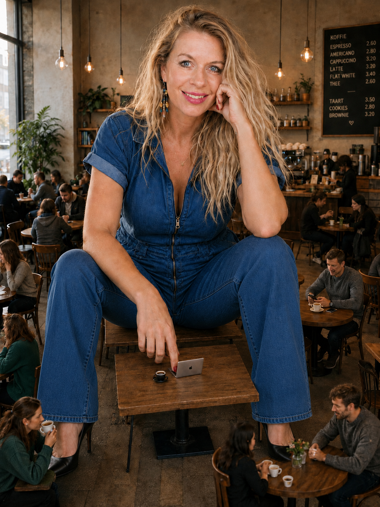
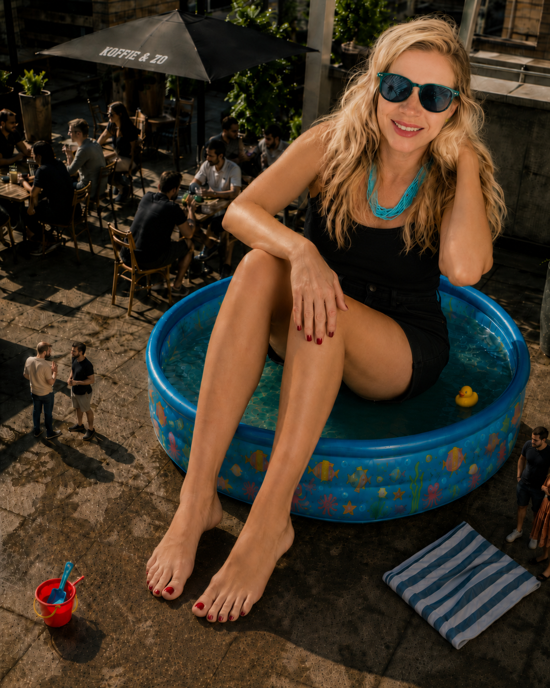
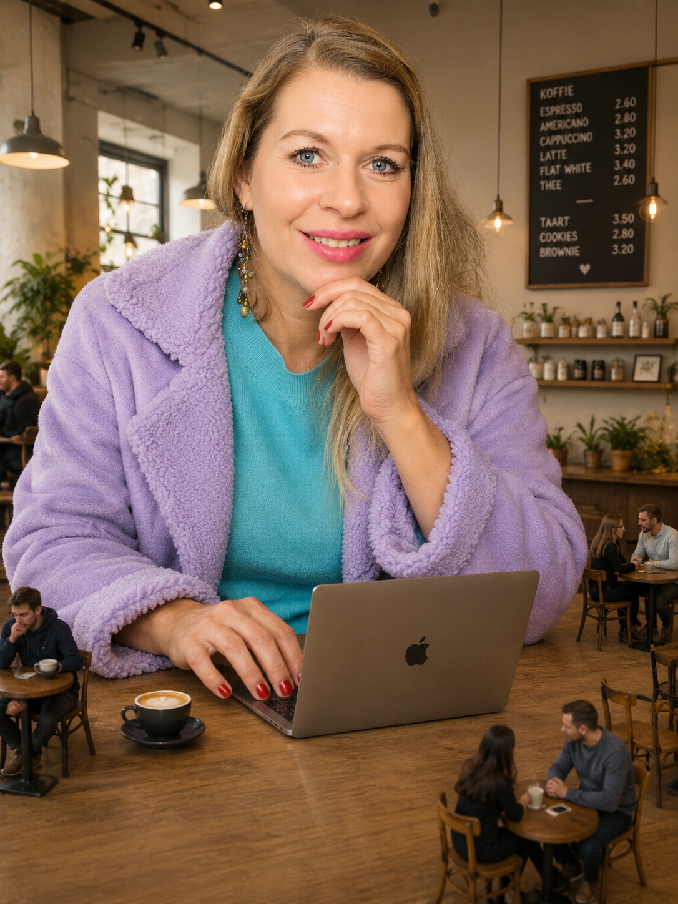
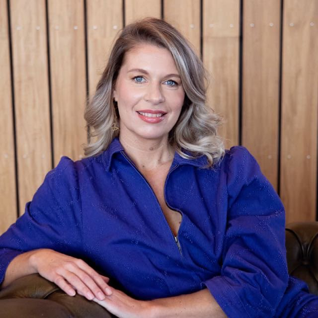
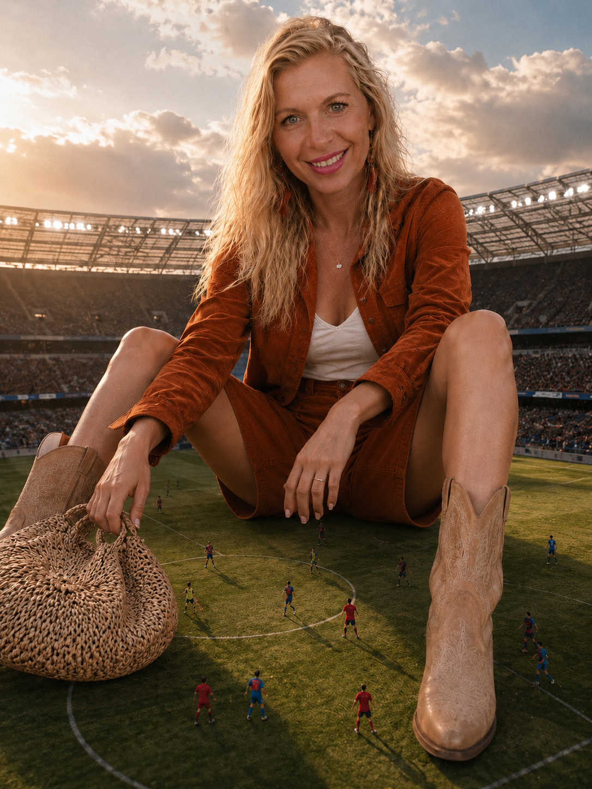

Creëer een speelveld waarin jouw visie blijft stromen en mensen als vanzelf met je meebewegen.
Voor visionairs, changemakers, multipassionates en neurospicy ondernemers die voelen dat hun perspectief sneller groeit dan iedere strategie waarin ze het proberen te vangen.
Maar naar een speelveld dat eindelijk net zo beweeglijk mag zijn als jouw brein.
Het probleem is nooit jouw brein geweest.
Het probleem is dat je steeds hebt geprobeerd jouw beweeglijke brein te laten functioneren in statische systemen.

iets te groot voor het systeem ;-)Jij bent niet hier om nog een paar tips aan het internet toe te voegen.
Wanneer jij spreekt, schrijft of creëert, gebeurt er iets anders. Mensen gaan zichzelf en de wereld anders zien.
Je stampt niet alleen producten, diensten, programma's of zelfs een complete business uit de grond.
Je opent nieuwe perspectieven. Je geeft woorden aan iets wat anderen al voelen, maar nog niet kunnen benoemen.
En precies daarom loop je vast zodra je jouw visie probeert te proppen in een niche, een website, een funnel of een standaard webinar.
Niet omdat je geen focus hebt.
Maar omdat jouw brein voortdurend nieuwe verbanden ziet. Terwijl jij nog bezig bent een landingspagina af te maken, is jouw perspectief alweer verder gegroeid. Terwijl je een post schrijft, zie je ineens een diepere laag. Terwijl je jouw aanbod probeert uit te leggen, ontstaat er alweer iets nieuws.
Je springt niet steeds van hot naar her. Jouw visie blijft zich ontvouwen.
Je probeert iets vast te zetten dat van nature wil bewegen.
En dus voelt bijna alles wat je maakt op een gegeven moment alweer te klein.
Niet omdat het niet goed is.
Maar omdat jij alweer verder bent.

herkenbaar? net iets te klein ;-)Hoe spannend je het ook vindt.
Waarom?Omdat spreken misschien wel de enige vorm van creëren is die zich live met jou meebeweegt.
Terwijl jij spreekt, ontstaan er nieuwe woorden. Nieuwe inzichten. Soms zelfs een compleet nieuw verhaal, in een taal die pas ontstaat terwijl de woorden je mond uitstromen. Niet alleen bij jouw publiek, maar ook bij jouzelf. Alsof je jezelf hardop verder ontdekt. Alsof jouw perspectief zich ter plekke verder ontvouwt.
En precies dát proberen de meeste webinarstrategieën eruit te halen.
Ze leren je een script.
Een volgorde.
Schaarste.
Urgentie.
Het perfecte bruggetje naar je aanbod.
En natuurlijk werkt dat soms.
Maar voel eens eerlijk...
Voelt het ook als jóu?
Of voelt het alsof je een rol speelt in een toneelstuk dat iemand anders heeft geschreven?
Ze verlangen naar iemand die iets ziet wat zij zelf nog niet kunnen zien.
Niet omdat jij ver boven hen staat.
Integendeel.
Je loopt misschien maar een paar stappen voor. Maar nét genoeg om een perspectief zichtbaar te maken dat voor hen nog verborgen is. En als jij dat perspectief durft te delen, gebeurt er iets bijzonders.
Je hoeft niet meer te overtuigen.
Je hoeft niet meer te trekken.
Je hoeft geen psychologische trucjes toe te passen.
Je creëert een speelveld waarin zij zelf voelen:
"Hier wil ik zijn."Niet omdat jij ze hebt overtuigd.
Maar omdat ze zichzelf herkennen in de ruimte die jij hebt geopend.

ik + mijn verlengstuk ;-)Voor changemakers die impact willen maken én een winstgevende business willen bouwen zonder zichzelf onderweg kwijt te raken.
Voor multipassionates die niet één ding willen kiezen, omdat juist de verbinding tussen al hun ideeën hun grootste kracht is.
Voor pioniers die geen trucjes willen leren, maar ruimte willen creëren voor iets wat nog niet eerder bestond.
Voor neurospicy breinen die al hun hele leven horen dat ze "te veel", "te breed", "te chaotisch" of "te veranderlijk" zijn, terwijl ze diep van binnen weten dat hun manier van denken juist hun grootste kracht is.
Voor wie voelt dat spreken geen marketinginstrument is, maar een vorm van creatie.

Ik ben Sonja Leonie Brouwer.
De afgelopen acht jaar hielp ik honderden ondernemers, experts en sprekers om woorden te geven aan iets wat veel groter was dan een presentatie alleen. Ik ontwierp TEDx-waardige talks, begeleidde ondernemers naar webinars die echt iets in beweging zetten en hielp mensen niet alleen beter spreken, maar vooral steviger staan in hun eigen perspectief.
Vandaag combineer ik mijn ervaring in spreken, positionering, strategie en transformatie met AI.
Niet als een losse tool waar je af en toe mee chat. Niet alleen als coach of sparringpartner. Maar ook als businesspartner, creator en uitvoerder.
AI helpt je verbanden zien, woorden vinden voor wat nog geen taal had en ideeën sneller tot leven brengen. Het kan meedenken, structureren, schrijven, uitwerken en bouwen, zodat niet alles meer op jouw schouders terechtkomt.
Eindelijk hoeven al die ideeën in jouw hoofd niet te blijven wachten tot jij tijd, focus of energie genoeg hebt om ze één voor één zelf uit te voeren.
Terwijl jij doet waar jij het allerbeste in bent, creëren, verbinden, richting geven en nieuwe mogelijkheden zien, helpt AI je om veel meer van wat er in jou leeft daadwerkelijk de wereld in te krijgen.
AI vervangt jouw creativiteit niet.
Het zorgt ervoor dat veel meer van jouw creativiteit ook echt tot leven komt.
Nooit als de bron van jouw waarde.
Want jouw waarde zit niet in de output van een machine.
Jouw waarde zit in de manier waarop jij de wereld ziet.
Niet om nóg een webinar te volgen.
Maar om te ervaren hoe het voelt als spreken geen trucje meer is. Geen script. Geen toneelstuk waarin je iemand probeert te overtuigen.
Wel een levend speelveld waarin jij creëert terwijl je spreekt. Waarin jouw perspectief zich live mag ontvouwen. Waarin mensen niet instappen omdat jij de perfecte pitch hebt, maar omdat ze voelen dat jij iets ziet waar ze zelf nog blind voor zijn.

samen creëren we een groter speelveld ;-)En misschien is dat wel de grootste verschuiving van allemaal.
Dat spreken, creëren, impact maken én een winstgevende business bouwen niet langer vier losse werelden zijn.
Dat je niet eerst maanden hoeft te creëren om daarna pas te mogen verkopen. Dat verkopen geen onderbreking meer is van jouw creativiteit, maar er een vanzelfsprekend gevolg van wordt.
Omdat jouw doelgroep niet instapt door de manier waarop jij verkoopt. Ze stappen in omdat ze willen blijven in de ruimte die jij hebt geopend.
En dát is precies wat een Vanzelfsprekinar is: een speelveld waarin niet alleen jouw publiek transformeert, maar waarin jijzelf ook blijft creëren terwijl je spreekt. Waarin nieuwe inzichten ontstaan terwijl je ze uitspreekt en jouw visie mag blijven groeien, zonder dat je haar opnieuw hoeft vast te zetten.
Misschien is jouw volgende stap niet nóg harder werken aan je business.
Misschien is het tijd om een speelveld te bouwen dat eindelijk net zo beweeglijk mag zijn als jij.Yes! Spring het speelveld op.
Vul je gegevens in en je plek is gereserveerd.